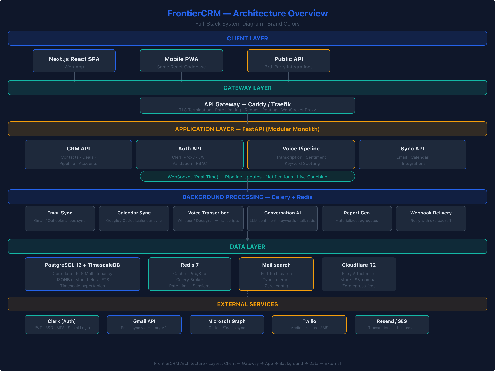

FrontierCRM — Technical Architecture & Stack Selection
Architecture Decision Record | Compiled 2026-06-28 Target: SMB/Mid-Market (10–200 employees) Based on: Integration Landscape (T3), Competitive/Market Research (T4)
Table of Contents
- System Overview & Architecture Principles
- High-Level Architecture
- Stack Decision Summary
- FrontierCRM Architecture Diagram
- ADR-001: Backend Framework
- ADR-002: API Design Paradigm
- ADR-003: Database Architecture
- ADR-004: Frontend Framework
- ADR-005: Mobile Strategy
- ADR-006: Authentication & Identity
- ADR-007: Cloud Hosting & Infrastructure
- ADR-008: Email Delivery Infrastructure
- ADR-009: Full-Text Search Engine
- ADR-010: File & Attachment Storage
- ADR-011: Background Jobs & Task Queue
1. System Overview & Architecture Principles
What We're Building
FrontierCRM is an AI-native CRM platform for SMB/mid-market companies (10–200 employees). It competes with Salesforce, HubSpot, Pipedrive, and Zoho by delivering:
- Core CRM: Contacts, accounts, deals, pipeline kanban, activity tracking
- Deep Integrations: Gmail, Outlook/Exchange, Google/Outlook Calendar, Twilio/Aircall telephony, Slack/Teams
- AI-Native Features: Conversation intelligence (call transcription, sentiment, talk-ratio, keyword spotting), AI-assisted deal scoring, smart activity capture
- Real-Time: Live pipeline updates, instant notifications, collaborative editing
- Developer Platform: REST API, webhooks, marketplace for integrations
- Reporting & Analytics: Custom dashboards, pipeline forecasts, activity metrics
Architecture Principles
| # | Principle | Rationale |
|---|---|---|
| 1 | Boring tech where it counts, novel tech where it differentiates | Use well-understood frameworks for CRUD, auth, and deployment. Invest innovation budget in AI, search, and real-time. |
| 2 | Single-codebase, modular monolith first | Team of 3–5 engineers cannot maintain 12 microservices. Modular monolith with strict domain boundaries. Extract to services only when latency or team-size demands it. |
| 3 | API-first from day one | Every feature is exposed via REST API before the UI touches it. This enables the PWA, the public API, webhooks, and future mobile clients. |
| 4 | Async everything for integration sync | Email sync, calendar sync, voice processing — all background. Never block an HTTP request on third-party API calls. |
| 5 | Multi-tenant by row-level security | Schema-per-tenant is operationally expensive with 1000+ tenants. Row-level security (RLS) in Postgres with tenant_id on every table. Simpler to operate, easier to scale, and good enough for SMB data isolation. |
| 6 | AI pipeline is a first-class citizen, not an afterthought | The voice intelligence pipeline runs on the same codebase, not a separate system. Python backend makes this natural. |
| 7 | Observability by default | Logging, metrics, and tracing from day one. The team needs to understand production behavior without guesswork. |
Constraints
- Team size: 3–5 founding engineers (must be pragmatic, not aspirational)
- Target: ship working product in 3 months (P0 + P1)
- Budget: SMB pricing = infrastructure must be lean
- AI costs: must stay under $0.01/call for voice intelligence
2. High-Level Architecture
| |

| |### Architecture DiagramSee frontiercrm-architecture.html for the full interactive SVG diagram.
3. Stack Decision Summary
| Category | Recommendation | Status | Key Driver |
|---|---|---|---|
| Backend | Python (FastAPI) | ✅ Selected | Async Python + AI/ML ecosystem; Pydantic validation for CRM domain |
| API | REST-first | ✅ Selected | Webhooks, public API, caching, simplicity for SMB scale |
| Core DB | PostgreSQL 16 | ✅ Selected | RLS multi-tenancy, JSONB for custom fields, FTS, reliability |
| Cache/Queue | Redis 7 | ✅ Selected | Dual use: cache + Celery broker + pub/sub for real-time |
| Analytics | TimescaleDB (pg extension) | ✅ Selected | Time-series reports, pipeline velocity, no separate infra |
| Frontend | React 19 + TypeScript + Next.js | ✅ Selected | Largest ecosystem, best hiring, Radix/TanStack for complex UI |
| Mobile | PWA-first (React) | ✅ Selected | Reuse web code, zero app store friction, defer native until traction |
| Auth | Clerk | ✅ Selected | Best DX for SMB, pre-built UI, social login, MFA, pricing fits |
| Hosting | GCP | ✅ Selected | Vertex AI for voice pipeline, Cloud SQL, Pub/Sub, Memorystore |
| Email Tx | Resend | ✅ Selected | React Email templates, great API, good deliverability |
| Email Bulk | AWS SES | ✅ Fallback | Cheapest for bulk ($0.10/1K), integration via Resend routing |
| Search | Meilisearch | ✅ Selected | Typo-tolerant, zero-config, perfect for CRM contact/deal search |
| Files | Cloudflare R2 | ✅ Selected | S3-compatible API, zero egress fees, CDN delivery |
| Queue | Celery + Redis | ✅ Selected | Python-native, Redis already in stack, mature ecosystem |
4. FrontierCRM Architecture Diagram (Conceptual)
The full interactive diagram is in frontiercrm-architecture.html. Below is the component topology:
Layers (Top to Bottom)
Client Layer - Next.js React SPA (main web app) - Progressive Web App (same React codebase, responsive + service worker) - Public REST API (consumed by 3rd-party integrations)
Edge / Gateway Layer - Caddy or Traefik reverse proxy - TLS termination - Rate limiting (per-tenant, per-IP) - Request routing (API, WebSocket, static assets, webhook receivers) - DDoS protection via Cloudflare (optional front)
Application Layer (FastAPI)
- Monolithic backend with clear domain modules:
- contacts — Contact, Account, Deal, Pipeline, Stage CRUD
- activity — Notes, Tasks, Events, Email tracking
- auth — Clerk proxy, webhook handler, JWT validation middleware
- sync — Email sync engine, calendar sync engine, conflict resolution
- voice — Call recording receiver, transcription, sentiment, keyword spotting
- search — Meilisearch index management, faceted queries
- reports — Aggregation queries, cached dashboard data
- webhooks — Outbound webhook delivery with retry
- api — Public REST API surface with versioning
Real-Time Layer - WebSocket connections via FastAPI's WebSocket support - Pipeline board updates (deal moved → broadcast to viewing users) - Notification stream (new email matched to deal, mention, task reminder) - Live call coaching status (voice pipeline → agent UI)
Background Processing (Celery + Redis) - Email sync worker (sync Gmail/Outlook mailboxes, delta sync via history API) - Calendar sync worker (sync Google/Outlook calendars, handle recurrence expansion) - Voice transcription worker (Whisper/Deepgram → transcript storage) - Conversation intelligence worker (LLM sentiment, keyword extraction, talk ratio) - Report generation worker (materialized aggregate refresh) - Webhook delivery worker (retry with exponential backoff) - File processing worker (image thumbnail generation, virus scan)
Data Layer - PostgreSQL 16: - Core relational data (contacts, accounts, deals, activities, users) - Row-level security for multi-tenancy - JSONB for custom fields (per-tenant schema flexibility) - Full-text search (tsvector triggers for basic search before Meilisearch is synced) - TimescaleDB extension for analytics hypertables - PostGIS extension for geo features (optional) - Redis 7: - Cache (API response cache, session store) - Celery broker (task queue) - Pub/Sub (real-time notifications, WebSocket broadcast) - Rate limiting counters (sliding window) - Rate limit token buckets - Meilisearch: - Contacts, deals, notes, email search indexes - Typo-tolerant search - Faceted filters (pipeline stage, owner, date range) - Cloudflare R2: - File attachments (email attachments, deal documents, images) - Signed URL generation for secure client access
External Integrations - Gmail API + Pub/Sub push (email sync) - Microsoft Graph API (Outlook/Office 365 sync) - Google Calendar API + CalDAV (calendar sync) - Twilio/Aircall/Vonage (telephony) - Resend (transactional email) - AWS SES (bulk email) - Clerk (auth) - Slack/Teams (notifications) - Stripe (billing, future)
ADR-001: Backend Framework
Context
FrontierCRM needs a backend framework that handles: - CRUD-heavy REST API with complex domain models (contacts, deals, pipelines) - Real-time WebSocket connections (pipeline updates, notifications) - Async background processing (email sync, calendar sync, voice transcription) - AI/ML pipeline integration (Whisper, LLM inference for conversation intelligence) - Strong type safety for a data-intensive domain - Team productivity (3–5 engineers shipping in 3 months)
Options
| Framework | Language | Async | WebSocket | AI/ML Ecosystem | Type Safety | Hiring | Benchmark (req/s) |
|---|---|---|---|---|---|---|---|
| FastAPI | Python | ✅ Native | ✅ Via WS | ✅ Best (HF, Torch, Whisper, LangChain) | ✅ Pydantic | ✅ Large | ~7,000 (uWSGI) |
| Django + DRF | Python | ⚠️ Async added later | ⚠️ Channels (extra dep) | ✅ Same as FastAPI | ✅ Django ORM | ✅ Largest | ~2,500 |
| NestJS | TypeScript | ✅ Native | ✅ Native | ⚠️ Via Python subprocess | ✅ TypeScript | ✅ Large | ~15,000 |
| Gin/Echo | Go | ✅ Goroutines | ✅ Native | ❌ No native ML libs | ⚠️ Interface-based | ⚠️ Smaller | ~80,000 |
| Phoenix | Elixir | ✅ Native | ✅ GenServer | ❌ No native ML libs | ✅ Pattern match | ❌ Niche | ~30,000 |
Tradeoff Analysis
Go wins on raw throughput — a CRM's pain point isn't API throughput, it's integration sync and data complexity. The bottleneck is Gmail API rate limits, not our response time. Raw req/s is not the constraint.
Node.js (NestJS) is strong — TypeScript ecosystem, WebSocket built-in, and shared types with frontend. The dealbreaker: AI/ML pipeline. Running Whisper, sentence-transformers, and LLM inference from Node requires Python subprocess or a separate microservice. That adds team overhead.
Python (FastAPI) is the pragmatic choice — FastAPI gives us: - Async by default (uvicorn/httptools) - Pydantic models shared between API, DB (SQLAlchemy), and validation - Native integration with Python AI/ML stack (Whisper, Transformers, spaCy, LangChain) - Mature ORM (SQLAlchemy 2.0 async) - Celery for background tasks - OpenAPI docs auto-generated - Large hiring pool
Cost of Python: Lower raw throughput. Mitigation: modular monolith — voice processing runs on separate workers via Celery, not in the HTTP hot path. The API server only handles lightweight CRUD. Voice processing happens asynchronously.
Recommendation
Python (FastAPI) — selected.
The deciding factor is the AI/ML pipeline. FrontierCRM's primary differentiator is conversation intelligence. Running that in a separate Python microservice adds deployment complexity, serialization overhead, and a second codebase to maintain. FastAPI lets the entire stack live in one language with one async runtime.
Consequences
- API throughput ceiling lower than Go/Node — mitigated by Celery offloading, caching (Redis), and the fact that integration bottlenecks are external
- Must use SQLAlchemy async sessions carefully to avoid blocking the event loop
- Python's GIL means CPU-bound AI work must run in Celery workers (which it would anyway)
ADR-002: API Design Paradigm
Context
FrontierCRM's API serves four clients: the React SPA, the PWA mobile app, third-party integrations via a public API, and webhook consumers. The CRM domain is heavily CRUD with complex query patterns (filtered lists, aggregated reports, nested relations like contact→deals→activities).
Options
| Paradigm | Complexity | Caching | Webhooks | Rate Limiting | Nested Queries | Client Flexibility |
|---|---|---|---|---|---|---|
| REST | Low | ✅ Easy (HTTP cache, CDN) | ✅ Native | ✅ Per-endpoint | ⚠️ Multiple roundtrips | Low |
| GraphQL | Medium | ❌ Hard (no HTTP caching) | ⚠️ Extra tooling | ❌ Hard (per-field) | ✅ Single query | Medium |
| REST + selective GraphQL | High | Mixed | Mixed | Complex | Best of both | High |
| gRPC | High | ❌ No browser | ❌ No browser | ✅ Easy | ✅ Streams | ❌ Browser requires gRPC-web |
Tradeoff Analysis
GraphQL's advantage (single query for nested data) is real but overvalued for a CRM:
- The SPA has one primary view: a specific page (deal detail, contact detail, pipeline board). Each page knows exactly what data it needs.
- N+1 queries are manageable with RESTful endpoints like GET /deals/{id}?include=contact,activities,notes
- GraphQL caching is an unsolved problem without Relay/Apollo client complexity
- Rate limiting per-field is operationally complex for a small team
- Webhooks are awkward with GraphQL (no standard HTTP verb semantics)
gRPC is unsuitable because it requires a browser proxy (gRPC-web) and doesn't natively support the HTTP caching and status codes that REST provides. It also complicates the public API surface for third-party developers.
Recommendation
REST-first — selected.
With the following conventions:
- JSON:API-inspired structure (compound documents with ?include=)
- Pagination: cursor-based (?cursor=...&limit=50) for lists, offset-based (?page=2&per_page=25) only for simple admin lists
- Filtering: ?filter[status]=won&filter[owner_id]=42
- Sorting: ?sort=-created_at (minus prefix = descending)
- Sparse fieldsets: ?fields[deal]=title,value,stage
- Versioning: /api/v1/... URL prefix
- Idempotency key: Idempotency-Key header for mutation endpoints
- Rate limiting: per-tenant, per-endpoint, sliding window via Redis
Consequences
- Frontend may need multiple roundtrips for complex dashboards — mitigated by compound document responses and client-side caching
- Adding GraphQL later is possible as a separate endpoint (
/graphql) without breaking REST - Public API is instantly comprehensible to any developer familiar with REST
ADR-003: Database Architecture
Context
FrontierCRM stores highly relational data (contacts linked to deals, deals to activities, activities to users) with additional requirements: - Multi-tenant isolation (RLS per tenant_id) - Custom fields (per-tenant schema flexibility) - Full-text search (contact names, deal titles, notes) - Time-series analytics (pipeline velocity, activity over time) - JSON/array data in some models - Geo-location for some use cases
Options
| Component | Options | Recommendation |
|---|---|---|
| Core DB | PostgreSQL, MySQL, SQLite | PostgreSQL 16 — RLS, JSONB, FTS, extensions |
| Analytics | TimescaleDB, ClickHouse, BigQuery | TimescaleDB — pg extension, no extra infra |
| Cache | Redis, Memcached, in-memory | Redis 7 — dual use cache + queue + pub/sub |
| Multi-tenancy | Schema-per-tenant, DB-per-tenant, RLS | RLS — simplest ops for 1000+ tenants |
| Custom Fields | JSONB, EAV pattern, separate table | JSONB — flexible, indexable, simple queries |
Multi-Tenancy Decision
| Model | Pros | Cons | Verdict |
|---|---|---|---|
| RLS (tenant_id on every row) | Single DB, simple migrations, easy backups, shared connection pool | Risk of missing WHERE tenant_id= in query | ✅ Selected |
| Schema-per-tenant | Complete isolation, easier per-tenant restore | N× schemas, hard migrations, separate connection pools | ❌ Too heavy for SMB |
| DB-per-tenant | Maximum isolation | Worst ops overhead, cannot cross-tenant query | ❌ Extreme overkill |
Implementation: Every table has a tenant_id column (UUID or BIGINT). A Postgres RLS policy enforces tenant_id = current_setting('app.current_tenant_id'). The FastAPI middleware sets this on every request from the Clerk-verified JWT.
Cache Strategy
Redis handles:
1. API response cache — GET /deals results cached for 30s, invalidated on mutation
2. Session store — Clerk-issued session tokens (stateless JWT primary, Redis for token blacklist)
3. Rate limiting counters — Sliding window per IP, per tenant
4. Celery broker — Both result backend and task queue
5. Real-time pub/sub — WebSocket channel broadcast
TimescaleDB Usage
TimescaleDB runs as a PostgreSQL extension (no separate server). Hypertables for: - Activity timeline (who did what, when — per contact, per deal) - Pipeline velocity (how long deals stay in each stage, by owner) - Email sync history (sync latency, success/failure rates) - API usage metrics (rate limit hits, endpoint traffic per tenant)
Recommendation
| Component | Choice | Rationale |
|---|---|---|
| Core Database | PostgreSQL 16 | RLS for multi-tenancy, JSONB for custom fields, tsv for basic search |
| Analytics | TimescaleDB (pg extension) | Hypertables on existing PG — no new infra |
| Cache/Queue/PubSub | Redis 7 | Single service for three roles |
| Multi-tenancy | Row-Level Security | Simple ops, good isolation for SMB data |
Consequences
- RLS can cause subtle bugs if a query forgets to set
app.current_tenant_id— mitigated by a required middleware that raises 500 if missing - TimescaleDB chunk management is automatic but must be monitored for disk growth
- Redis persistence must be configured (AOF + RDB) — losing Redis = losing queued tasks
ADR-004: Frontend Framework
Context
FrontierCRM's UI must support: - Complex data views: Kanban board (drag-and-drop pipeline), data tables with sorting/filtering, nested detail panels - Rich interactivity: inline editing, drag-and-drop, autocomplete search, date pickers - Real-time updates: pipeline changes reflected instantly, notifications as toast - Responsive design: works on desktop and mobile (PWA target) - Accessibility (WCAG 2.1 AA minimum for SMB enterprise) - Server-side rendering for SEO (public marketing pages, knowledge base)
Options
| Framework | Bundle Size | Performance | Ecosystem | SSR | Hiring | Learning Curve |
|---|---|---|---|---|---|---|
| React 19 + Next.js 15 | ~80KB gzip | Good (React compiler) | ✅ Largest | ✅ Next.js | ✅ Largest | Medium |
| Vue 3 + Nuxt | ~50KB gzip | Good | ✅ Large | ✅ Nuxt | ✅ Large | Low |
| Svelte 5 + SvelteKit | ~25KB gzip | Excellent | ⚠️ Growing | ✅ SvelteKit | ⚠️ Smaller | Low |
| Solid.js + SolidStart | ~15KB gzip | Excellent | ⚠️ Small | ⚠️ Experimental | ❌ Niche | Medium |
Tradeoff Analysis
Svelte is compelling for performance and bundle size — the smallest of the options. But: - Component ecosystem for complex UI (data grids, kanban boards, rich text editors) is thin compared to React - Hiring Svelte engineers is harder than React - The CRM domain benefits from battle-tested libraries like TanStack Table, dnd-kit, Radix UI, and React Email
Vue has a good ecosystem and a lower learning curve. However: - React's ecosystem depth is still significantly larger for complex enterprise UIs - Shared TypeScript types with the backend (if Node) is irrelevant since we chose Python
Solid.js is technically impressive (fine-grained reactivity, smallest bundles). But the ecosystem, hiring pool, and SSR story are all too small for a production CRM.
Recommendation
React 19 + TypeScript + Next.js 15 — selected.
Key libraries for the CRM stack: - TanStack Query — server state management, caching, optimistic updates - TanStack Table — sortable, filterable, paginated data tables - dnd-kit — drag-and-drop kanban pipeline boards - Radix UI — accessible primitive components (dropdowns, dialogs, popovers) - Tailwind CSS 4 — utility-first styling - React Email — email templates (shared with Resend) - Next.js 15 — App Router, SSR for marketing pages, API routes for lightweight needs - zod — runtime validation matching Pydantic models (frontend validation) - shadcn/ui — component library built on Radix + Tailwind
Consequences
- React's bundle size (~80KB gzip) is larger than alternatives — mitigated by Next.js route-level code splitting and React Server Components
- React's ecosystem depth is the key advantage for a CRM UI
- TypeScript is mandatory — the CRM domain has complex types that benefit from static analysis
ADR-005: Mobile Strategy
Context
Sales teams are highly mobile — they need to check pipelines, log activities, and view contacts from their phone. FrontierCRM's target SMB segment (10–200 employees) includes deskless workers (field sales, service reps) who primarily work from mobile devices.
Options
| Approach | Reuse Web Code | Native Feel | Dev Cost | Maintenance | App Store |
|---|---|---|---|---|---|
| PWA (React responsive) | ✅ 100% | ⚠️ Web view | Low | Single codebase | ❌ No store |
| React Native | ⚠️ 60–70% (share types/state) | ✅ Near-native | Medium-High | Two codebases | ✅ iOS + Android |
| Flutter | ❌ 0% | ✅ Native-quality | High | Two codebases | ✅ iOS + Android |
| Hybrid (Capacitor) | ✅ 100% | ❌ WebView UX | Medium | Single codebase | ✅ Wrappers |
Tradeoff Analysis
PWA-first is the strongest strategy for Phase 0–2: - Zero additional code — the Next.js app is already responsive - Service worker for offline access to cached deals - Push notifications via Web Push API - No app store friction (SMB users won't tolerate "ask IT to approve app install") - Delivers mobile value from day 1 of web launch - Gap: limited native APIs (no Bluetooth for barcode scanning, no background sync)
React Native gap — sharing some types and state management patterns with the web React codebase, but the UI is completely different (mobile-native idioms vs web). It's not "React on mobile" — it's a separate UI codebase using React paradigms.
Recommendation
PWA-first — selected for Phase 0–2. Evaluate React Native in Phase 4 (Scale) when: - ARR > $500K and mobile usage analytics show >30% of sessions are mobile - Feature requests for native capabilities (camera barcode scanning, offline-first with background sync, native push notification reliability)
Phased Approach
| Phase | Mobile State | Investment |
|---|---|---|
| P0–P1 | Responsive web (desktop + tablet + phone) | $0 (built into web sprint) |
| P2 | Full PWA (service worker, offline cache, push notifications) | 2 weeks |
| P3 | PWA enhancements (background sync, indexDB offline store) | 1 week |
| P4 | React Native app (if traction warrants) | 8–12 weeks |
Consequences
- Some enterprise deals may require iOS/Android apps — mitigated by the PWA being feature-complete for all CRM operations
- PWA push notifications are less reliable than native on iOS (Safari limitations) — user education needed
- If mobile becomes dominant, the PWA foundation means we don't start from zero for React Native
ADR-006: Authentication & Identity
Context
FrontierCRM needs: user registration/login, team management, role-based access control (admin, manager, sales rep), social login (Google, Microsoft — critical for email/calendar integration), MFA, and future SSO (SAML/OIDC for enterprise upgrades).
Options
| Provider | Pricing (SMB Scale) | Pre-built UI | Social Login | MFA | Enterprise SSO | Customization | Self-hosted |
|---|---|---|---|---|---|---|---|
| Clerk | Free tier: 10K users | ✅ Excellent (React components) | ✅ Google, MS, GitHub, Apple | ✅ | ✅ (Business plan) | ✅ Good | ❌ |
| Auth0 | $0–$23/user/mo (B2B) | ✅ Good | ✅ All major | ✅ | ✅ Native | ✅ Good | ⚠️ Private cloud |
| Supabase Auth | Free tier generous | ✅ Good | ✅ Google, MS, GitHub | ⚠️ Limited | ❌ No SAML | ⚠️ Limited | ✅ Self-host |
| Custom OAuth | $0 (dev cost: 4–6 weeks) | ❌ Build from scratch | ❌ Must implement each | ❌ Must implement | ❌ Must implement | ✅ Full control | ✅ Full |
Tradeoff Analysis
Auth0 is the enterprise standard but pricing is painful for SMB. At 100 users with SSO: $23/user/month × 100 = $2,300/mo just for auth. That's unacceptable for a CRM targeting $29/user/mo.
Clerk is the sweet spot: - Free tier: 10,000 users, unlimited orgs (perfect for SMB SaaS) - Pre-built React components that match FrontierCRM's design - Native Google/Microsoft social login (critical for Gmail/Outlook OAuth flow) - MFA included - SSO on Business plan ($25/mo + $5/user/mo) — affordable when enterprise customers arrive - Webhooks for user lifecycle events
Supabase Auth is a strong contender but: - Limited MFA options - No native enterprise SSO (SAML) - We're not using Supabase for anything else (it's an all-or-nothing platform)
Recommendation
Clerk — selected.
Auth architecture: - Clerk provides the authn/authz layer via React components (SignIn, SignUp, UserProfile) - JWT tokens issued by Clerk, verified by FastAPI middleware (public key from Clerk's JWKS endpoint) - No session DB needed — Clerk manages sessions on their side - RBAC managed in Clerk organizations → mapped to tenant_id in PostgreSQL - Google/Microsoft OAuth via Clerk social login → OAuth tokens stored (not in Clerk, but in our DB) for email/calendar sync - Webhook handler in FastAPI for user.created, user.deleted, organization.membership events
Consequences
- Vendor lock-in — migrating off Clerk requires rebuilding auth UI and OAuth token storage
- Clerk's uptime becomes our critical path — mitigated by JWT caching (tokens are valid for their TTL even if Clerk is down)
- OAuth tokens for email/calendar are stored in our DB (Clerk doesn't persist them) — we manage refresh ourselves
ADR-007: Cloud Hosting & Infrastructure
Context
FrontierCRM needs a cloud provider that supports: - Managed PostgreSQL and Redis - AI/ML compute (GPU for Whisper transcription — or via API) - Pub/Sub for event-driven architecture - Object storage - Container orchestration (Kubernetes or simpler) - Global low-latency - Simple cost structure for SMB pricing
Options
| Provider | Managed PG | Managed Redis | AI/ML | Pub/Sub | Containers | Cost (SMB) | Simplicity |
|---|---|---|---|---|---|---|---|
| GCP | ✅ Cloud SQL | ✅ Memorystore | ✅ Vertex AI, GPUs | ✅ Pub/Sub | ✅ GKE / Cloud Run | Medium | Good |
| AWS | ✅ RDS | ✅ ElastiCache | ✅ SageMaker | ✅ SQS/SNS | ✅ ECS/EKS | High (complex pricing) | Overwhelming |
| Railway | ✅ Managed | ✅ Managed | ❌ No GPU | ❌ Limited | ✅ Native | Low | Excellent |
| Render | ✅ Managed | ⚠️ Redis via Upstash addon | ❌ No GPU | ❌ No | ✅ Native | Low | Excellent |
| Fly.io | ✅ Managed | ✅ Upstash | ❌ No GPU | ❌ No | ✅ Fly Machines | Low-Medium | Good |
Tradeoff Analysis
Railway/Render/Fly.io are excellent for a 3-engineer team — simple deploys, managed DBs, great DX. The blocker: AI/ML compute. Voice transcription at scale needs either: - GPU instances (for self-hosted Whisper) — none of these support GPUs - AI API calls (Deepgram, OpenAI Whisper API) — fine, but the compute for post-processing (sentiment, keyword extraction, talk ratio using LLMs) needs CPU/memory
If we commit to using Deepgram/AssemblyAI for transcription and LLM APIs for analysis, we don't need GPU infrastructure. In that case, Railway is viable. But: - No Pub/Sub — we'd rely on Redis pub/sub and Celery for everything - Limited scaling beyond a single region - Less enterprise credibility
GCP is the strategic choice: - Cloud SQL for PostgreSQL — managed, with point-in-time recovery, read replicas - Memorystore for Redis - Vertex AI — if we ever want to fine-tune models or serve our own Whisper, it's available - Cloud Tasks + Pub/Sub — ideal for async processing - Cloud Run — serverless containers, pay-per-use, no K8s complexity - GKE — available when we need it - Strong multi-region story - AI/ML ecosystem (same infra that runs our voice pipeline also serves the rest of the app)
Recommendation
GCP — selected.
Target architecture for Phase 0–1: - Cloud Run — serverless container for FastAPI (auto-scaling to zero, pay per request) - Cloud SQL (PostgreSQL 16) — with TimescaleDB extension - Memorystore (Redis 7) — cache + Celery broker + pub/sub - Cloud Tasks — for scheduled job dispatching - Cloud Pub/Sub — for Gmail push notification ingestion - Cloud Storage (GCS) — for file storage until we need CDN, then migrate to R2 - Secret Manager — API keys, Clerk secret key, database passwords - Cloud Logging + Monitoring — observability
Phase 2+ add: - Cloud Run + GPU (optional) — if self-hosting Whisper - Vertex AI — for fine-tuned models - Cloud CDN — for static assets - GKE — if Cloud Run limitations hit
Consequences
- GCP has a learning curve for the team — mitigated by Cloud Run's simplicity
- GCS egress costs are higher than R2 — mitigated by using R2 for user-downloaded files
- GCP cost management is not trivial — must set budget alerts from day 1
- Cloud Run has a 60-minute request timeout — background tasks go through Celery, not Cloud Run
ADR-008: Email Delivery Infrastructure
Context
FrontierCRM sends varied email types: - Transactional: deal notifications, task reminders, team mentions, invite emails - Bulk: newsletter, drip campaigns, onboarding sequences - System: password resets, verification emails - Mirrored: emails sent on behalf of users via Gmail/Outlook integration (routed through native APIs, not SES)
Options
| Provider | Deliverability | API DX | Pricing (100K/mo) | Templates | Analytics | Sender Reputation |
|---|---|---|---|---|---|---|
| Resend | ✅ Excellent | ✅ Best (React Email) | $20/mo (100K) | ✅ React Email | ✅ Good | ✅ Warm IPs |
| SendGrid | ✅ Good | ⚠️ Complex | ~$20/mo (Essentials) 50K cap | ✅ Drag-drop | ✅ Detailed | ✅ Mature |
| AWS SES | ⚠️ Requires warming | ❌ Low-level API | $10/mo (100K) | ❌ Raw | ❌ Minimal | ❌ Needs warmup |
Tradeoff Analysis
AWS SES is the cheapest but requires sender reputation warming (can take weeks) and has a lower-level API. Deliverability out of the box is worse than Resend or SendGrid.
SendGrid is mature and reliable — owned by Twilio (which we're already using for telephony). But their API is complex (multiple versions, confusing docs), and pricing gets expensive at higher volumes.
Resend is the modern choice: - React Email templates (write email UIs as React components — testable, type-safe, shareable) - Simple, beautiful API (one POST request) - Good deliverability out of the box (warm IP pools) - Pricing: $20/mo for 100K emails — fits SMB budget - Webhooks for delivery events (opens, clicks, bounces) - SDKs for Python, TypeScript, etc.
The small risk: Resend is younger (founded 2022) than SendGrid (2009) or SES (2011). But they're processing billions of emails, have strong backing, and the API DX is best-in-class.
Recommendation
Resend (primary) + SES (bulk fallback) — selected.
- All transactional, notification, and invite emails go through Resend
- SES as a bulk routing fallback — use Resend's built-in routing to SES for high-volume/low-priority emails
- React Email templates shared with the frontend codebase
- Delivery webhooks update email engagement analytics in the CRM
Consequences
- Resend vendor lock-in for templates — mitigated by React Email being framework-agnostic (can switch providers easily)
- SES warmup needed if Resend goes down or pricing changes — start the SES warmup process at Phase 1 even if unused
- Monitoring: delivery rate, bounce rate, spam complaint rate via webhooks
ADR-009: Full-Text Search Engine
Context
FrontierCRM users need to search across: - Contacts (name, email, phone, company) - Deals (name, value, stage, notes) - Emails (subject, body, sender, date range) - Notes and activities (text content) - Files (file name only initially)
Requirements: typo-tolerant search, faceted filtering (by pipeline stage, owner, date), fast autocomplete, relevance ranking.
Options
| Engine | Setup Time | Typo Tolerance | Faceted Search | Operations | Cost (10K docs) |
|---|---|---|---|---|---|
| Meilisearch | 15 min | ✅ Excellent (built-in) | ✅ Native | Minimal | Free (self-host) |
| Typesense | 30 min | ✅ Good | ✅ Configurable | Minimal | Free (self-host) |
| Elasticsearch | 1–2 days | ⚠️ Requires config | ✅ Powerful | Heavy (dedicated ops) | Free but expensive infra |
| PostgreSQL FTS | 0 min | ❌ None | ⚠️ Partial via tsquery | None (in-DB) | $0 |
Tradeoff Analysis
PostgreSQL FTS is good enough for basic search on contacts and deals — and we should use it as a fallback/baseline. But the typo-tolerance (critical for salespeople typing fast on mobile) and faceted search require a dedicated search engine.
Elasticsearch is overkill for an SMB CRM. It needs dedicated ops, a large JVM heap, and significant tuning. The complexity is not justified for 10K–100K docs.
Typesense and Meilisearch are similar — both are modern, fast, open-source, with minimal ops. Meilisearch edges ahead on: - Out-of-the-box typo tolerance (no configuration) - Built-in faceted filtering - Auto-complete API - Simple Python client - Smaller resource footprint
Recommendation
Meilisearch — selected.
Architecture: - Self-hosted on the same GCP project (or via Meilisearch Cloud for $99/mo if we want zero ops) - One index per searchable entity: contacts, deals, emails, notes - Sync via Celery worker: on entity create/update → trigger index update - Faceted filters: stage, owner_id, deal_value_range, created_date - Search API exposed through FastAPI (not directly) — auth middleware ensures tenant isolation - PostgreSQL FTS as fallback (if Meilisearch is down, show basic results)
Consequences
- Meilisearch must stay in sync with PostgreSQL — eventual consistency is acceptable (sub-second latency)
- For complex aggregations/analytics, use PostgreSQL/TimescaleDB, not Meilisearch
- Multi-tenant search filtering happens at the FastAPI proxy layer (filter by tenant_id on the search results, or use Meilisearch tenant tokens)
ADR-010: File & Attachment Storage
Context
FrontierCRM stores: email attachments, deal documents, contact profile images, call recordings (transcription files), report exports (PDF/CSV). Files need secure access (signed URLs), preview support (images, PDFs), and CDN delivery.
Options
| Provider | S3-Compatible | Egress Fees | CDN | Signed URLs | Pricing (1TB) |
|---|---|---|---|---|---|
| Cloudflare R2 | ✅ Yes | $0 (no egress) | ✅ Global CDN | ✅ Yes | ~$15/mo |
| AWS S3 | ✅ Native | ~$0.09/GB | ✅ CloudFront | ✅ Yes | ~$23/mo + egress |
| GCS | ✅ Yes | ~$0.12/GB | ✅ Cloud CDN | ✅ Yes | ~$20/mo + egress |
| MinIO (self-host) | ✅ Yes | N/A | ❌ Manual | ⚠️ Custom | Server cost |
Tradeoff Analysis
S3 is the default choice for most projects, but egress costs add up significantly for a CRM. Every time a user downloads an attachment, views a document preview, or streams a call recording, S3 charges egress. For a 100-user org viewing 20 attachments/day at 500KB each: ~$30/mo in egress alone.
Cloudflare R2 is S3-compatible (same SDK, same API calls) but charges zero egress fees. Combined with Cloudflare's global CDN, file delivery is faster and cheaper. The only tradeoff: fewer regions than S3 (but Cloudflare's global network compensates).
Recommendation
Cloudflare R2 — selected.
Architecture: - S3-compatible API — use boto3/S3 SDK with R2 endpoint - Signed URLs for secure client access (time-limited, per-file) - Pre-signed upload URLs for direct client upload (optional — or proxy through FastAPI for virus scanning) - CDN delivery via Cloudflare (automatic with R2) - Image thumbnails generated via Celery worker (Pillow/simple thumbnail) - Call recording files encrypted at rest
Consequences
- Migrating to S3 later is trivial (same API) if needed
- Cloudflare Workers (optional) can process files at the edge for image resizing
- No additional CDN setup — Cloudflare handles it automatically
- Must configure CORS policies for direct browser upload
ADR-011: Background Jobs & Task Queue
Context
FrontierCRM has extensive background processing needs: - Email sync (Gmail/Outlook mailbox polling, delta sync, history processing) - Calendar sync (event sync, recurrence expansion) - Voice processing (call recording ingestion, transcription, analysis) - Webhook delivery (outbound to integrations) - Report generation (aggregate refresh, materialized views) - File processing (thumbnail generation, virus scan) - Scheduled tasks (daily digests, pipeline snapshot, cleanup)
Options
| Queue | Language Fit | Reliability | Scheduling | Monitoring | Setups |
|---|---|---|---|---|---|
| Celery + Redis | ✅ Python-native | ✅ Good (acks, retries, DLQ) | ✅ Celery Beat | ✅ Flower / Prometheus | Redis already in stack |
| BullMQ + Redis | ✅ Node-native | ✅ Good | ✅ Cron jobs | ✅ Arena / Bull Board | Python backend ❌ |
| Cloud Tasks (GCP) | ✅ Any HTTP | ✅ Excellent | ❌ No cron | ✅ GCP Console | No Redis needed |
| RabbitMQ | ✅ Any AMQP | ✅ Excellent (persistent, HA) | ⚠️ Via separate scheduler | ✅ Management UI | Separate infra |
| SQS | ✅ Any HTTP | ✅ Excellent (at-least-once) | ❌ No cron | ✅ AWS Console | AWS lock-in |
Tradeoff Analysis
RabbitMQ is enterprise-grade but overkill for Phase 0–2. It adds a separate service to manage, with no strong benefit over Redis-backed Celery for SMB-scale workloads.
GCP Cloud Tasks is a strong option — fully managed, no Redis needed for the queue itself. The gap: no Python-native SDK for advanced patterns (task chaining, groups, chords). Also, we still need Redis for cache and rate limiting, so we haven't eliminated a dependency.
Celery + Redis is the natural fit: - Python-native (same language as the backend) - Redis is already in the stack for cache and pub/sub - Mature ecosystem (Celery Beat for scheduling, Flower for monitoring, retries, rate limiting, task routing) - Support for complex workflows (chains, groups, chords) needed for voice processing pipeline - Task routing (separate queues for email sync vs voice processing vs webhooks)
Recommendation
Celery + Redis — selected.
Architecture:
- Broker: Redis (already in stack)
- Result backend: Redis
- Beat scheduler: Celery Beat for recurring tasks
- Routing: Separate queues per workload:
- email_sync — mailbox polling, delta sync
- calendar_sync — event sync, recurrence expansion
- voice — transcription, analysis, keyword extraction
- webhooks — outbound delivery with retry
- reports — aggregate refresh, materialized view rebuild
- files — thumbnail gen, virus scan
- default — everything else
- Concurrency: Prefork workers (multiprocessing for CPU-bound AI work), Gevent workers for I/O-bound sync work
- Monitoring: Flower (web UI) + Prometheus metrics
Consequences
- Celery + Redis adds operational complexity vs managed queues — mitigated by GCP Memorystore (managed Redis)
- Task visibility: if Redis goes down, tasks are lost (depends on configuration) — use CELERY_ACKS_LATE with persistent Redis
- Celery's documentation is vast but uneven — the team must invest time in learning patterns
- For Phase 0, start simple (single queue, default config) and add routing as task volume grows
5. Summary: The 80/20 Stack
For Phase 0–1 (MVP shipping in 3 months), here's what actually gets built:
FastAPI 🐍 + PostgreSQL 🐘 + Redis 🔴 + React ⚛️ + Next.js ▲
+ Clerk 🔐 + Meilisearch 🔍 + Cloudflare R2 📁 + Resend ✉️
+ Celery ⚙️ + GCP ☁️ (Cloud Run + Cloud SQL + Memorystore)
Everything else is Phase 2+:
+ TimescaleDB 📊 -> Phase 2 (when analytics reports launch)
+ Avdanced Celery routing 🔀 -> Phase 2 (when voice processing grows)
+ React Native 📱 -> Phase 4 (when mobile traction warrants)
+ GKE 🚢 -> Phase 4 (if Cloud Run limits hit)
+ SSO/SAML -> Phase 4 (enterprise upgrade)
6. Cost Estimate (Monthly, Phase 0–1, 100 tenants / 1,000 users)
| Service | Cost | Notes |
|---|---|---|
| Cloud Run (FastAPI + Celery) | ~$100 | 10 concurrent instances, 2 vCPU each |
| Cloud SQL (PostgreSQL) | ~$200 | 4 vCPU, 16GB RAM, 500GB SSD |
| Memorystore (Redis) | ~$50 | 2GB instance |
| Cloudflare R2 | ~$15 | 1TB storage, 0 egress |
| Resend | ~$20 | 100K emails |
| Meilisearch (self-host) | ~$50 | 1 vCPU, 2GB RAM on Cloud Run |
| Clerk | $0 | Free tier (10K users) |
| GCP egress + misc | ~$50 | |
| Total | ~$485/mo |
This is well within the margins of an SMB CRM at $29–$59/user/mo with even 50 paying users ($1,450–$2,950/mo revenue).
Appendix A: Decision Log
| ADR | Decision | Date | Status |
|---|---|---|---|
| ADR-001 | Python (FastAPI) | 2026-06-28 | ✅ Accepted |
| ADR-002 | REST-first API | 2026-06-28 | ✅ Accepted |
| ADR-003 | PostgreSQL + Redis + TimescaleDB | 2026-06-28 | ✅ Accepted |
| ADR-004 | React 19 + TypeScript + Next.js | 2026-06-28 | ✅ Accepted |
| ADR-005 | PWA-first, RN later | 2026-06-28 | ✅ Accepted |
| ADR-006 | Clerk | 2026-06-28 | ✅ Accepted |
| ADR-007 | GCP (Cloud Run + Cloud SQL) | 2026-06-28 | ✅ Accepted |
| ADR-008 | Resend + SES fallback | 2026-06-28 | ✅ Accepted |
| ADR-009 | Meilisearch | 2026-06-28 | ✅ Accepted |
| ADR-010 | Cloudflare R2 | 2026-06-28 | ✅ Accepted |
| ADR-011 | Celery + Redis | 2026-06-28 | ✅ Accepted |